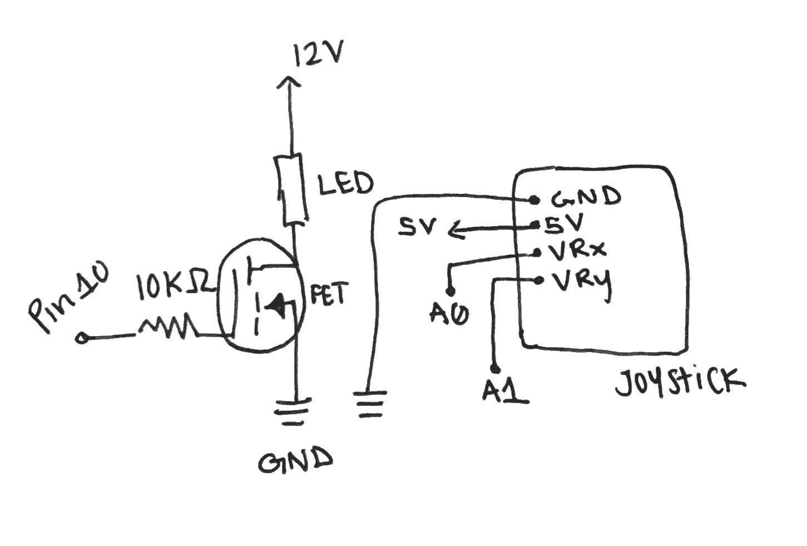
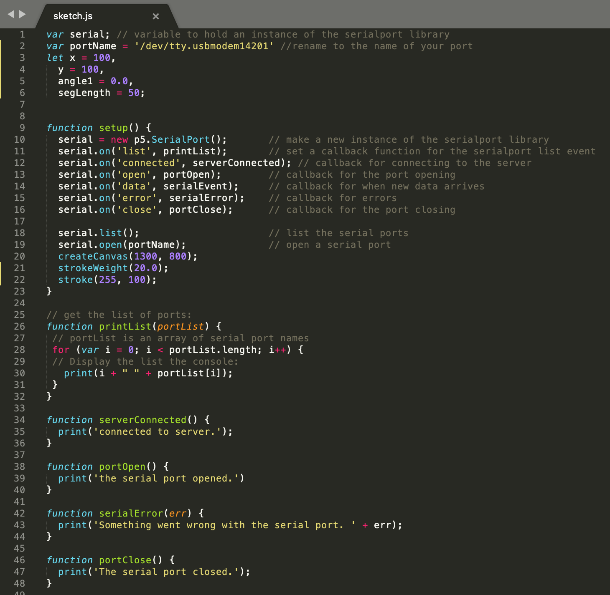

Assignment 5 & 6: Talking to the web and the web talks back!
"Create a webpage with p5.js that interacts with your arduino. By doing things with your keyboard or mouse, things must change in the real world! Vice versa, by doing things on your arduino, the p5 page must also change. You must use JSON parsing, Serial, and p5.js. Your webpage must be interactive. You must use a minimum of two input devices from the arduino (e.g. the joystick counts as 2 inputs) and a minimum of one output device from the arduino, e.g. an LED."
Talking to the web & the web talks back demo:

This is a gif showing how the circuit works when assembled. On the screen there is a line segment that is being pushed or pulled by the movement of the joystick. In addition, the LED strips will turn off/on when pressing the "o" key on the keyboard.
Circuit diagram:
The system has two parts where they both share a common ground. Pin A0 connects to the x-position of the joystick while pin A1 connects to the y-position of the joystick. The movement of the joystick will interact with data from the arduino over serial and display it on a web browser via p5.js framework, making the line segment push/pull in the direction of the joystick. The LED strip is connected to pin 10 through a 10kΩ resistor and mosfet transistor.
Schematic and Calculations:

I chose to use a 10k ohm resistor for my LED strip because it will properly ensure the components are grounded. I want to ensure that the current passing from the drain to source is not above the max current of the transistor, which is 60A, according to the datasheets/class slides. The gate pin won't draw much current due to how the transistor works, so I don't technically need a resistor there, but I wanted to be safe. Other than that, there were no other real calculations.
Arduino Code Snippet:

The snippet above is the code that is programmed into the arduino to link the joystick and led strip in the circuit. On the serial monitor, movement of the joystick will allow values between 0-1023 for both x and y positions due to analogRead() function.
Sketch.js Code Snippet:

The snippet above is the code that is programmed into the browser to take serial values from the arduino and display them on the screen. The code also shows the code to communicate key pressed values to the arduino to change the LED brightness.